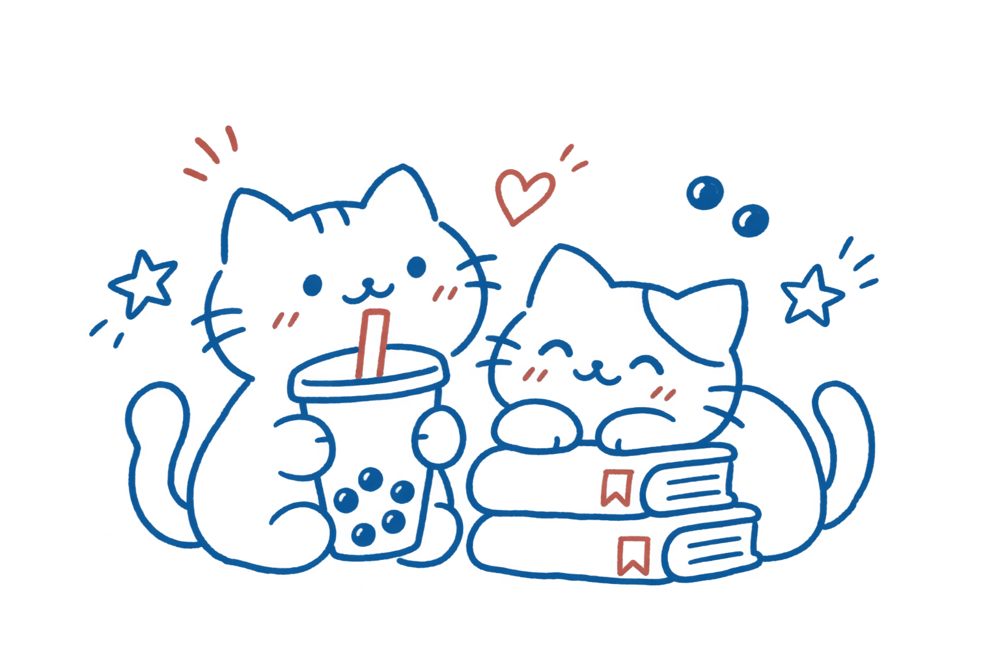

Wander over
No ticket needed. Head to the COM1 foyer once the date is confirmed.

A LITTLE PAUSE BEFORE FINALS
free bubble tea + snacks + good company
Dropping by? Leave a little heads-up to help us plan the snacks.
Optional headcount only. No cup reservation. The date is still to be confirmed.
No ticket needed. Head to the COM1 foyer once the date is confirmed.
A volunteer checks you in and lets you know if there’s tea left.
Cups go to the first 150 claims. Stay and hang out even when tea runs out.
The exact table location and access arrangements will be confirmed before the event.
Interest, arrivals, and cups are different. Interest helps plan food. Arrivals are real door check-ins. Cup claims stop at 150. The live dashboard and public tea banner share the same online counter.
PRACTICE · Try the door buttons. These counts never change the event or the public banner.
All 150 cups are claimed. You can still check people in without a cup.
Tap once per person. Hand over the cup after the saved confirmation. Use a wrist stamp or hand mark to prevent repeat claims.
Practice is ready.
The first hello is still to come.
Opening check-in switches the public banner to show the shared cup balance. Pausing or closing updates it too.
If the older Netlify interest form already received responses, enter its genuine response count once. This is added to new responses in this dashboard. Exclude tests and duplicates.
Download a private backup at each shift change. Interest names are visible only after organiser sign-in.
An older arrival backup can only be imported while the shared arrival counter is empty. Imports never overwrite existing shared arrivals. The full shared JSON export is an archive, not an in-app restore file.
One response means one person's interest, not a reservation or a confirmed arrival. Review duplicate nicknames before ordering food.
When offline, the public tea banner will say it cannot confirm stock. Live check-ins pause. Keep a paper tally until the shared counter is reachable; do not use independent offline cup counters. There are no automated Telegram messages.